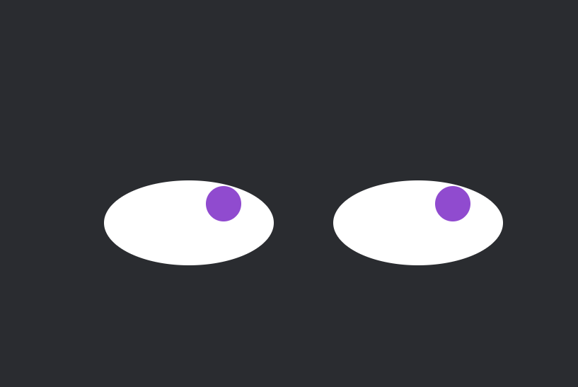
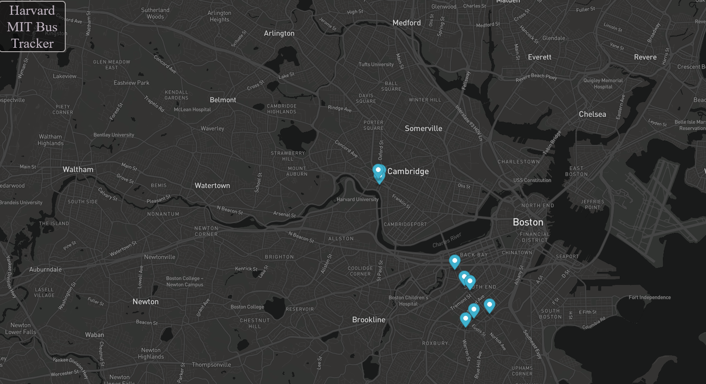

Pac-Men
This Project was assigned to show Pac-Men Bouncing on the screen edges. You can add multiple pac-men and click start to make them move at different speeds across the screen

Eye-Movement
This Project was assigned to show mouse events, specifcally following the mouse along with how to update the DOM.

Real Time Bus Tracker
This is a project for testing API calls, current implementation tracks multiple buses and updates their location each second.
